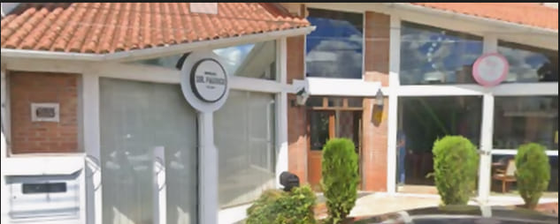

Sem fila,
sem espera
Você chega e corta, sem fila e sem espera.

Barbearia desde 2016
Cortes precisos, barba bem feita e um atendimento pensado para você sair do jeito que gosta.
Agendar meu horárioAtendimento personalizado
Horário reservado para você
Sir. Patrick Três de Maio · RS
Mais que um corte
Cortes precisos, barba bem feita e aquele atendimento que faz você querer voltar.
Corte personalizado para o seu estilo
Tudo no mesmo lugar,
com atenção em cada detalhe.
Serviços
Serviços feitos com cuidado, do jeito que combina com você.
Corte personalizado, acabamento preciso e finalização de acordo com o seu estilo.
Desenho, aparo e acabamento para deixar a barba alinhada e bem cuidada.
Acabamento leve e natural para valorizar o formato do seu rosto.
O visual completo: corte, barba e acabamento feitos no mesmo atendimento.
Você chega e corta, sem fila e sem espera.
Do clássico ao moderno, o corte acompanha o seu estilo e a sua personalidade.
Desmarque pelo site e escolha outro horário quando quiser.
Onde fica